Numerical Methods for Deep Learning
Ordinary Differential Equations
1 Accompanying Notebooks
These lecture slides are designed to accompany two notebooks:
| Section | Topic | Notebook Link |
|---|---|---|
| Part 1 | Machine Learning Background Primer | |
| Part 2 | Neuro Differential Equations | Future Work |
| Part 3 | Generative AI Exercise |
2 Presentation Slides and Notes

Hi, I am Simon Ghyselincks. I completed my undergraduate studies at UBC in Engineering Physics, and I am currently in the PhD track program in Computer Science, where I work on research at the intersection of applied mathematics and machine learning. A significant part of my research uses continuous dynamical systems to model deep machine learning tasks. My recent project on geophysical inversion for structural geology is a primary example of this process, and we will explore that application later in this talk.
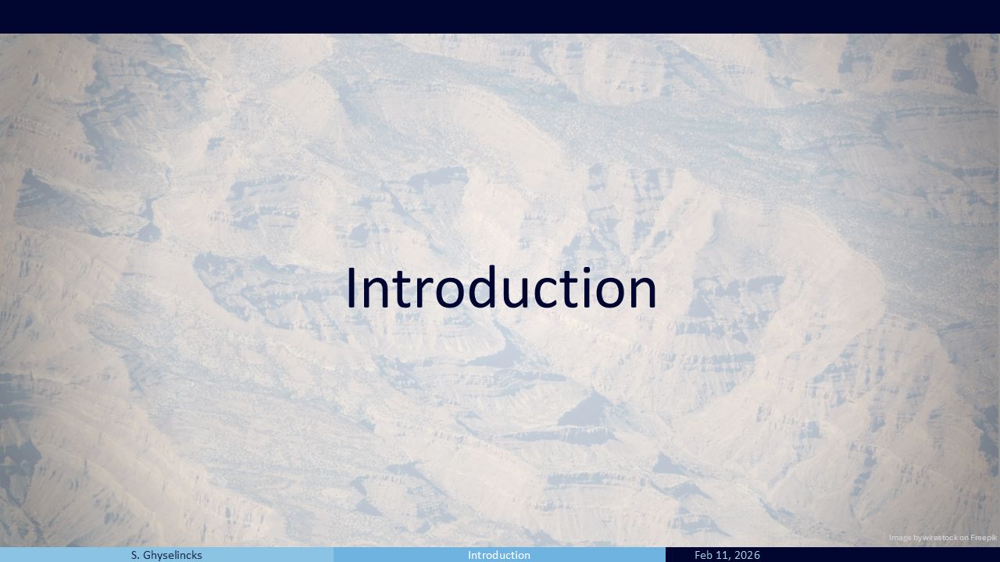
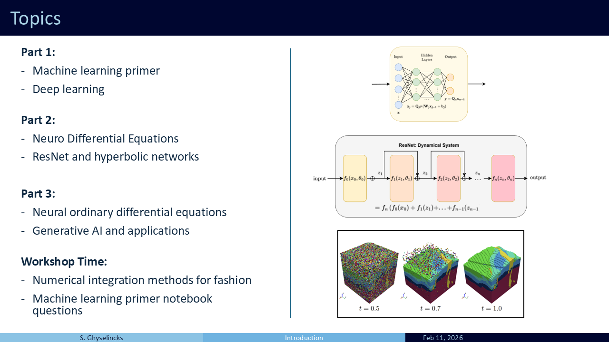
This workshop is structured into three main parts:
Part 1 familiarizes us with the fundamentals of machine learning. We will see that it shares similarities with numerical methods, which will bring us up to speed on standard deep learning models.
Part 2 looks at Neuro Differential Equations. With our foundational background established, we can explore how numerical analysis can inform the construction of deep networks. We will look at the celebrated ResNet architecture as well as two others that are inspired by the leapfrog integration scheme, as well as symplectic integration of hamiltonian systems.
Part 3 covers Neural ODEs, where the deep learning model learns the continuous time dynamical system. It is a topic with many applications in the sciences, but we will look primarily at its application in generative AI. This type of network can also be used to solve complex inverse problems in geology.
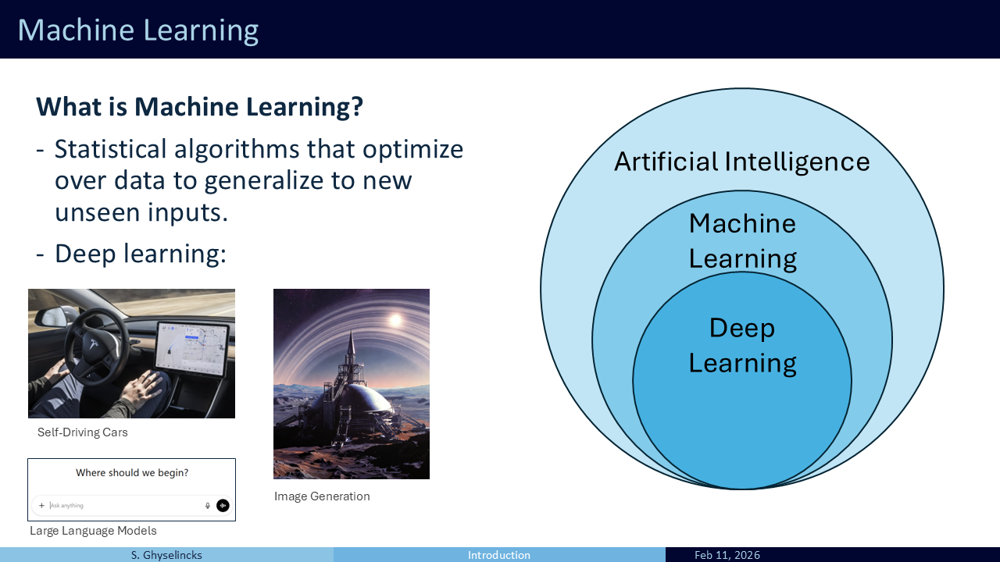
Machine learning encompasses statistical algorithms that “learn” from data, generalize to unseen inputs, and make new predictions or perform tasks without explicit, hard-coded instructions. It is a broad field. While it includes advanced deep learning tools like self-driving car algorithms (computer vision, control policies) and Generative AI (image generation, LLMs), it also includes traditional methods like decision trees, curve fitting, and data mining. Fundamentally, machine learning is about interpolation and extrapolation on data, which makes it closely linked to interpolating polynomials and numerical methods.
Part 1

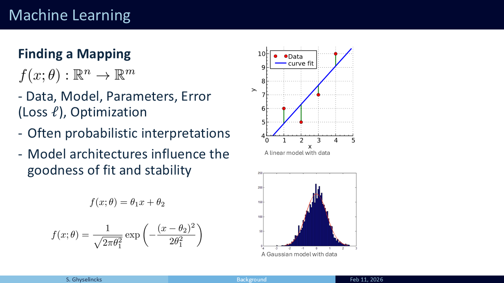
Machine learning tasks generally have the same ingredients:
- Some set of data we want to interpolate, might be paired input outputs
- A parameterized mathematical model (family of functions, what we expect)
- A measure of error we want to minimize (usually loss function)
- A method of solving for optimality (iterative methods, exact analytic solutions)
Often machine learning is probabilistic in nature:
- Most likely next word (LLM)
- Most likely fit of a line (Linear Regression)
- Likely images of cats (GenAI)
Shown are two examples of mathematical models. We constrain to a family of functions parameterized by theta and try to minimize an objective within that constraint. At the top is a linear model with just two parameters, the slope and intercept. Below is a gaussian model with mean and variance as parameters.
The model may not perfectly fit the data, but this is a feature, not a bug. In the real world we are often working with noisy data, the quality of that noise determines what we optimize. Our mathematical model or hypothesis on the data distribution and problem informs much of our methods.
The learning in machine learning is simply optimizing over the parameters using the data to get a better model.

The choice of mathematical model directly influences the goodness of fit and the network’s ability to interpolate or extrapolate to new data. Similar to choosing a numerical solver, the stability and generalization to unseen data is of concern. We want to design architectures that are stable, robust to noise, and that do not over-fit to exisitng data. I start with the Runge function (\(f(x) = \frac{1}{1+25x^2}\)) because it provides a classic example of a mathematicl model that overfits to the available data points creating large error in the interpolated region. There are good choices and bad choices for a model.

Let’s look at Least Squares as a warm-up. It is a simple model with just two parameters: slope \(\theta_1\) and intercept \(\theta_2\). We take data pairs, model them as a single line, and find the “best fit” by minimizing the L2 loss. This is equivalent to a first-order polynomial interpolation problem, but now the problem is overdefined with more than two points, so it is not possible to perfectly pass through all points.
In machine learning, this has a probabilistic interpretation. We minimize the expectation in this deviation, treating each data sample with equal weighting. Because the model has only two parameters, we can form a Vandermonde matrix and solve it analytically as an \(\mathbf{A}x \approx \mathbf{b}\) linear algebra problem, yielding the normal equations \(\theta = (\mathbf{X}^T \mathbf{X})^{-1} \mathbf{X}^T \mathbf{y}\). While this exact analytic solution works well here, it is problem-specific. With noisy, high-dimensional data where exact solutions are impossible, we must turn to iterative optimization frameworks.
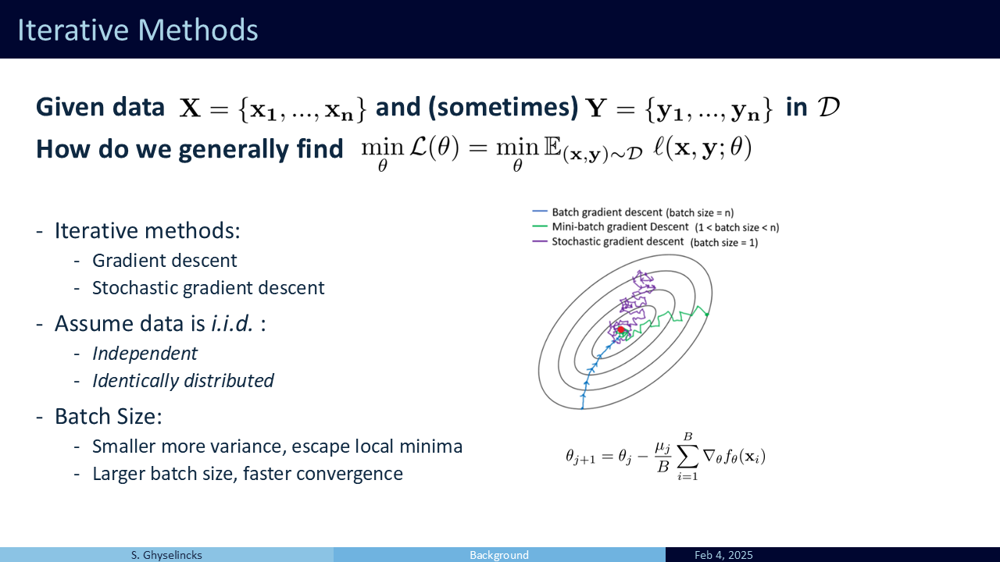
Given complex samples \(\mathbf{X}\) and \(\mathbf{Y}\), how do we tackle optimizing over complicated models. What is the minimizer for the model of a self-driving car? We now turn to iterative methods.
In the case of gradient descent, the problem is formulated by computing the local gradient of a loss function and stepping in the direction that reduces the loss. This has a link to ODEs where our update scheme is \(\mathbf{\dot \theta} = \nabla_\theta \mathcal{L}(\mathcal{D}; \theta)\) with inital value \(\theta_0\). The direction of travel is controlled by the loss landscape and the local minima are stationary points.
In practice stochastic gradient descent provides an unbiased estimator for the gradient using only a batch or subset of \(\mathcal{D}\) at each step. The smaller the batch size, the greater the variance of the estimator. To do this we make some assumptions on the data. We want to minimize the overall loss which is the expectation of loss over all individual samples. Invoking an “often incorrect” assumption of i.i.d. We treat the samples like drawing numbers from a hat.
Since each number is equally likely in probability as empirical samples from the true underlying data distribution, then they each carry the same weighting. By making successive passes over the data in batches, this gives a stochastic algorithm that in practice helps escape local minima with its variance. Note that outside of deep learning, SGD is generally a poor optimization technique!
To get the gradient of a model we use automatic differentiation in practice. Packages such as PyTorch construct a computational graph that uses succesive applicaitons of the chain rule to compute the gradient. To do so it saves intermediate values, as we will see ahead.

The Single Layer Perceptron (SLP) is a generalized approximation function. Inside, it applies a linear operation to the input \(\mathbf{x}\), yielding \(\mathbf{W}\mathbf{x} + \mathbf{b}\). Then, it passes that result through a non-linear activation function, \(\sigma(\cdot)\). A popular choice is ReLU, but generally, these functions are monotonically increasing with positive derivatives.
The non-linearity is the key to the entire system. Without it, chaining multiple matrices together would simply collapse back into a single linear operation. The activation function increases the rank of the resulting operation, acting as an extension of polynomial basis functions for higher dimensions. By the Universal Approximation Theorem, a single hidden layer with enough units can approximate any continuous function on a compact set.However, this does not guarantee that an algorithm such as gradient descent will find the optimal parameters.
In polynomial interpolation, we combine polynomial basis functions but In this case we are learning the basis functions. If we fix \(W\) and \(b\), for the 1D case of \(x\) we open into N+1 copies of x, then setting each \(\sigma\) to \(z^n\) we get polynomial interpolation again.
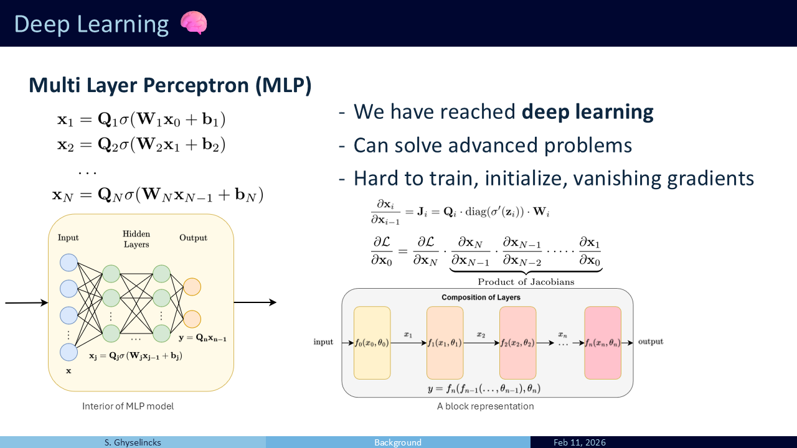
MLP We have reached deep learnin with more than one hidden layer. The output from the SLP is passed as the input to another SLP and so on We simply continue with more hidden layers. This forms a composition of many functions, basis functions of basis functions. Deep here refers to the depth of layers vs breadth of a single layer. This can solve advanced problems but is difficult to work with as the number of layers increases.
Problems:
- Finding the right learning rate and parameters can be difficult
- Sensitive to initialization, we cant simply initialize all parameters with 0s
- Question? What is the chain rule for one layer, what about several?
- What happens if the singular values of Q are W small? The successive Jacobians shrink the norm of parameter gradients being passed through backprop, exponentially.
- Early layers do not learn in this case
- How deep of a network can we go? (~20 layers with special care)
Part 2

Now we will look into extensions of the initial structures we have seen. Are there tools from numerical methods and numerical analysis that we can relate to this? Specifically, how do we deal with network stability and vanishing gradients as models scale?

The Residual Network (ResNet), introduced by He et al. (2015), was a groundbreaking paper. Why don’t I only model the difference across layers? Use the network itself to model the differences. This introduced the skip connection, which explicitly bypasses layers of the model.
ResNet was ground-breaking: - Halved error of previous SOTA models - First to beat human-level on visual recognition - It beat benchmarks across many different tasks, taking over the leaderboards - Previous contenders: 19-22 layers compared to ResNet 152 layers, made deep learning DEEP - Still used as a backbone in many models - One of the most import papers to computer vision and machine learning for the last while - The layers between skip connections may vary (point to bottom image)
Question: Where have we seen this relation before? This looks like an ODE if we add an h infront

ResNet is fundamentally a series of additive changes. It can be viewed as an Initial Value Problem (IVP), mapping a dynamical system where the hidden state is gradually pushed along a path (Haber and Ruthotto 2017). Because each layer has different weights, it is a time-variant field where each “time step” features different dynamics.
The skip connection has solved many of the problems with vanishing gradients, allowing models to go deeper. Standard depths include 34, 50, 101, and 152 layer systems with skip connections every two layers. The depth and complexity of the model is determined by the overfitting question, how much data do we have?
The architectural formulation from 2015 was trying to solve a vanishing gradient problem in optimization, but in the process it is structuring the model as learning difference steps. In 2017 work is published by Haber and Ruthotto providing the numerical methods analysis.
Question: if this is a dynamical system, what ODE integration method does this represent? (Forward Euler integration)
- What sort of stability concerns do we have?
- Can we impose more structure, can we use a different integrator
- Forward euler is one of the worst choices out of the gate, what about Runge-Kutta or symplectic?
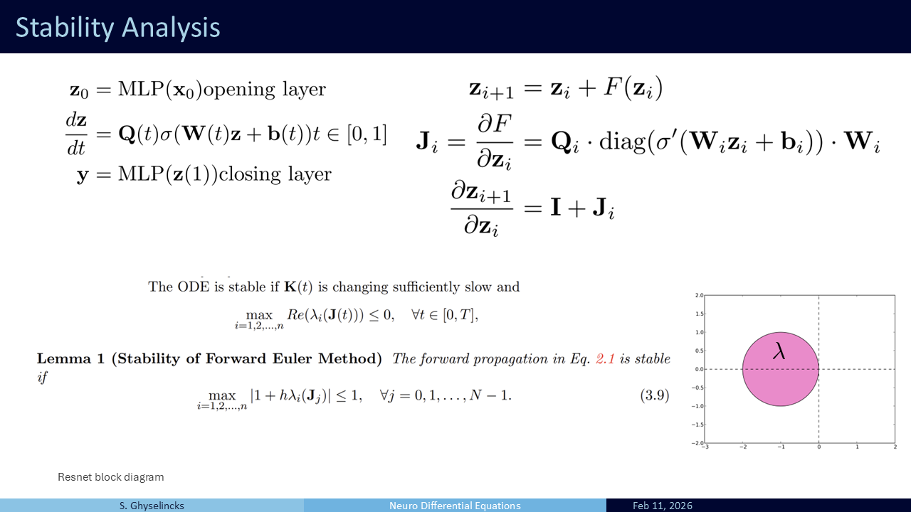
We derive the Jacobian the same way as for MLP, but this time there is a \(z_i\) term which gives identity since \(\mathbf{z}_i = I \mathbf{z}_i\). What sort of stability concerns do we have? The same as with forward Euler, but we look at the max eigenvalue now to constrain growth.
Question: what happens if this equation in Lemma 1 is not satisfied, what happens to the model?
- We cant say for certain because the Lemma is an “if” clause and not “iff”
We have time varying dynamics with different parameters at each layer, not every layer is the same. In practice, in the original ResNet paper they have exceptional results without concerns of stability, up to 152 layers. The optimization is largely controlling the stability in practice. Yet, Haber and Ruthotto argue that regularization or other conditions on the network could improve results rather than leaving it to the optimizer to control the stability.
Can we even use other network designs inspired by this skip connection?
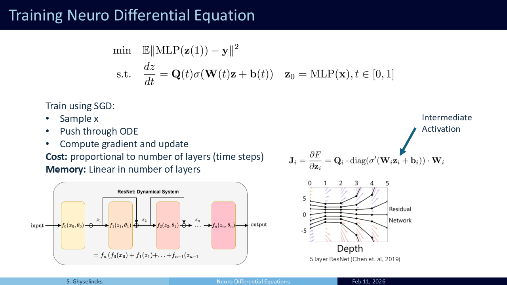
Training In the general form, training is formulated as a regression problem between the output labels and the result of the integrated ODE. The inner layers act as the hidden state being processed. The yellow layer “opens” the input to \(\mathbf{z}\) and the red layer is the MLP task head that uses the final hidden state as inputs. We sample from our data \(\mathbf{X}\), push it through the ODE, compute the loss, and use automatic differentiation to get the gradient to update the parameters
Analysis of cost:
- We can assume a fixed cost per layer if considering the same hidden dimension size to compute
- The memory cost during inference and training differs: inference is a single forward pass, we don’t store intermediate activations.
- Training requires automatic differentiation, storing the intermediate activations
- Typically much larger memory footprint, run into troubles with GPU for training

Revisiting stability, we know from numerical analysis that Forward Euler is not always our best bet. If the learned parameters are unstable, it can lead to exploding growth. What about other ODEs or integration methods? In instances of image classification we move from high frequency data to dissipative lower order information of labels (smoothing). In some instances we may want to impose conservation, forward euler can go wildly poorly in this task (see diagram). The Euler solution is going to diverge because the eigenvalues of the system are imaginary and outside of the region of convergence (no hope!). The leapfrog or semi-implicit Euler method has a different region of convergence
Question: can we use a leapfrog architecture instead?
- Resnet motivated by skip connections, but this numerical analysis approach is a generalization, we don’t need to stick to ResNet
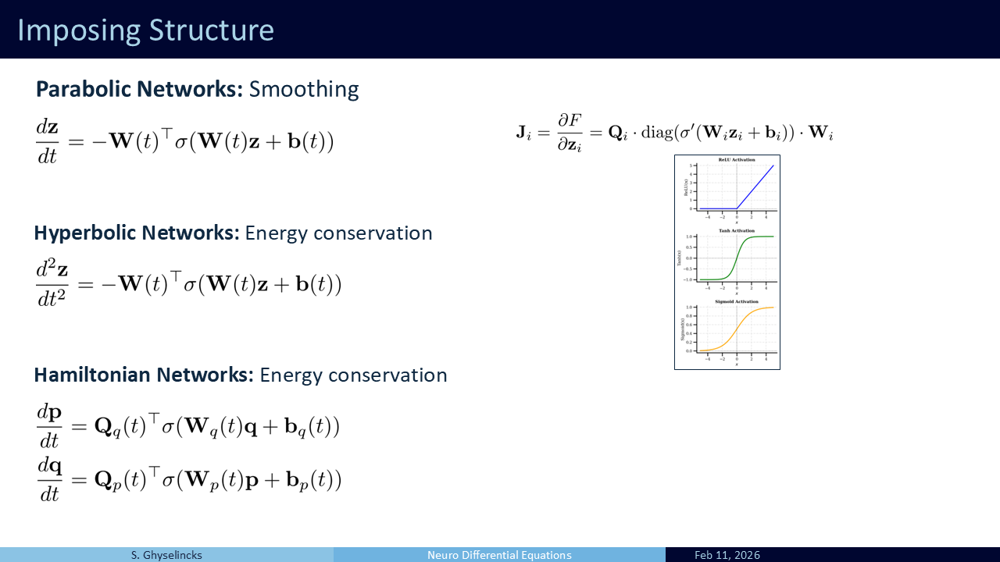
We can propose physics-informed architectures as shown by Ruthotto and Haber (2018).
Parabolic Networks: These can be integrated with Forward Euler safely. By enforcing symmetric negative definite weights, we ensure all eigenvalues are negative, aiding stability.
Hyperbolic Networks: This is a second-order, wave-like formulation.
Hamiltonian Networks: Another physics-inspired formulation designed for energy conservation.

If we take the central difference approximation, we can compute the new state using the previous two states, creating a double skip connection. This creates a Hyperbolic Network with reversible symmetry.
Because the network is mathematically reversible, we can backtrack computationally to reconstruct the activations without storing them in memory. This drops the memory cost, with the tradeoff being extra compute time. In scenarios where training memory is severely constrained, such as fine-tuning large open-source LLMs on consumer GPUs, the memory bypass is incredibly valuable.

Going back to the Hamiltonian network, this is the inspiration for using symplectic integration. This is a semi-implicit method, as the updated value for \(y_1 = x_1\) is used in the middle of the two step process. Also has energy conservation properties, reversible, memory efficient– serves as an alternative to leapfrog Used in a lot of research including a recent paper from our group on LLMs, (Gal et al. 2025).

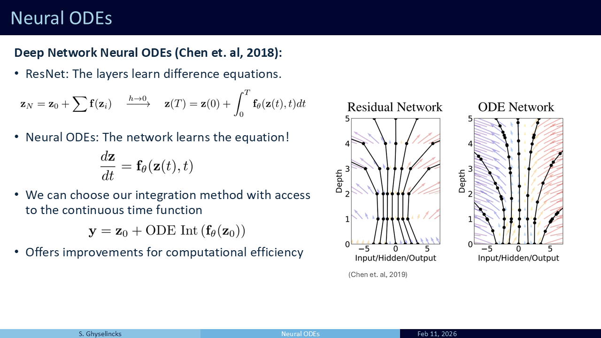
Question: we have looked at discretized ODEs inside of network architectures, what if we make the entire network an ODE?
- We can take the limit as as the step size goes to zero for an infinite depth ResNet
This gives us the integral equation, we use a Neural ODE (Chen et al. 2019) to learn the velocity field directly. Some variants are not time dependent such as Deep Equilibrium models (DEQs) (Bai, Kolter, and Koltun 2019). Some have a “time-embedding” that conveys the continuous time throughout the learning model. For inference we simply integrate the learned function using a numerical solver. This offers many approaches for handling the computation, choice of ODE integrator. What sort of integrators can we use for an arbitrary function?

Now we look at a new problem setting. We are looking at generative AI (image video generation). We suppose that we have a bunch of samples (red) from a complex probability distribution (images of fashion items). We want to infer the distribution and draw new samples from it (statistical problem) but how do we do this?
Directly learning a probability function is intractable due to the requirement that the integral sums to 1. Integrating over all \(\mathcal{R}\) for a model is simply impractical.
Solution: instead what we do is “push” samples from a known distribution (Gaussian) to our target distribution through a velocity field (Lipman et al. 2024). This avoids the partition function.

- I give a brief overview of the algorithm, this part is not important to understand, it is the training regime.

- We have learned a push velocity field so now we deploy numerical integration on IVP samples from source distribution!

This is a good point to refer to the notebook to experiment with ODE integration on a generative task
Part 3

Now I present some of my recent work that uses a neural ODE to perform geological inverison (Ghyselincks et al. 2026)

- Structural geology examines the distribution of rocks and strata within the Earth’s crust.
- Subsurface models of the earth are hindered by the scarcity of ground truth field data and uncertainty.
- Generating 3D geological models is costly and often does not capture the full range of potential geological structures

- Geology is highly varied. a large number of models are needed to represent the diversity of geological formations and time scales.
- A generative model implicitly learns the prior \(\Pr(m)\) through empirical sampling
- Our goal is to sample multiple solution to the same data, in contrast to maximum likelihood estimate
- To do this we need to generate many samples from a simulator and learn a conditional generative model that allows us to sample from the conditional distribution \(\Pr(m | d)\) empirically using ODE integration

- The synthetic dataset is designed to rapidly sample geology using a Markov sequence of parameterized geological operations such as folds, dikes, faults sequenced in different orders with varying parameters.

- The model architecture that is used comes from medical imaging and has multiscale processing with skip connections transporting information from the down sampling to upsampling stages
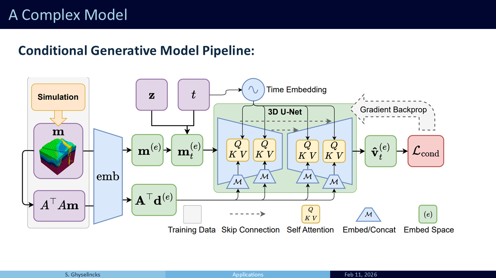
- The full pipeline for training is shown here, with simulation as an input in orange and the loss function shown on the right. More details can be found in the paper Synthetic Geology: Structural Geology Meets Deep Learning
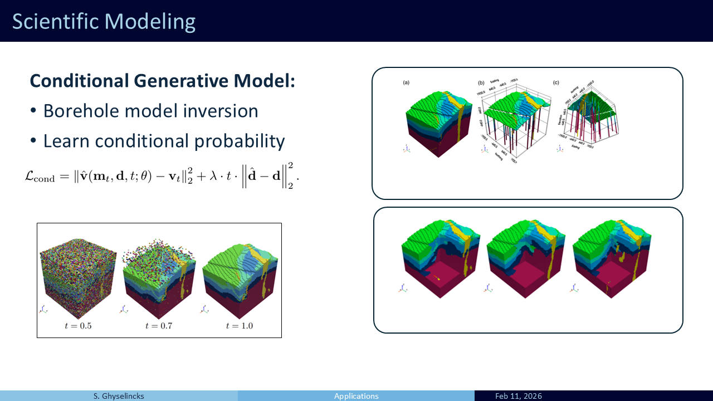
- Using a trained model on the conditional flow matchin objective, we can draw new samples from surface and borehole data.